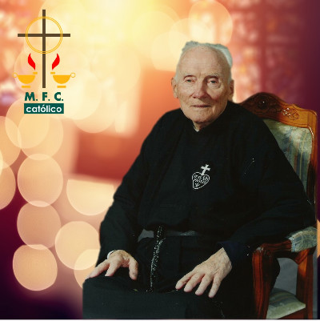
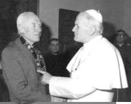

El orígen de nuestro Movimiento desde su fundación.
Es importante mencionar que el Movimiento Familiar Cristiano nació en dos países de América del Sur: Argentina y Uruguay entre los años de 1948 y 1950. El primer promotor de este apostolado, fue el Padre Pedro Richards(1911-2004), quien realizaba reuniones con matrimonios (algo inusitado en esa época), en forma indistinta en las ciudades de Buenos Aires y Montevideo, por lo que es justo decir que nace en las “márgenes del Río de la Plata”, dado que éste separa ambas ciudades.
Los primeros matrimonios, que junto con el Padre Richards hicieron lo posible por sembrar la semilla del MFC, en los demás países de América, fueron: Fritz y Hortensia Soneira, Adolfo y Ana María Gelsy y Juan Pedro y Malena Gallinal.
El Padre Richards y éstos Uruguayos,lograron que el Movimiento Familiar Cristiano llegará a Perú, Brasil, Chile y Venezuela, rebasando luego el cono sur, para extenderse luego a Centro América, Costa Rica, Cuba y México.
Padre Pedro Richards, fundador del MFC.
Si bien fue descendiente de europeos (Irlanda), su origen personal es argentino. Nació en la ciudad de Buenos Aires el 31 de Diciembre de 1911, hijo de Juan Richards y Julia Kehoe, prototipo de la familia cristiana. Ahí es donde el padre Pedro y su hermano Federico (también sacerdote pasionista) percibirán el llamado a la vocación y sentirán todo el calor de hogar para ofrecerse a Dios, en seguridad y libertad El año 1933 entra en la Congregación de los Padres Pasionistas. Cursa sus estudios en Buenos Aires y Córdoba. La Filosofía la estudia en el seminario de Edimburgo
El 25 de Agosto de 1940 es ordenado sacerdote. Durante diez años actúa celosamente como misionero en ciudades y pueblos, en estancias y campos. Cruza el Río de la Plata y su actividad llega desde el interior de Uruguay y Argentina hasta las ciudades de Buenos Aires y Montevideo. En 1948 inicia su actividad familiar, que no abandonará ya en toda su vida. Únicamente por un sentido providencial de Dios se explica esta dedicación al apostolado del hogar, que luego irá acrecentándose con el transcurso de los años Entre 1950 y 1952 experimenta los primeros resultados de una nueva metodología: las reuniones de equipos para matrimonios y las revisiones anuales en torno a un retiro de tres días. Dos signos históricos que el MFC no podrá olvidar después.
Por más de 30 años misionó los campos del Uruguay con jóvenes universitarios. Unió el mensaje evangelizador con la atención médica y odontológica. Por supuesto, llegar a la familia estaba entre las prioridades. El machismo, el laicismo oriental, la bajísima natalidad y la pobreza, herían su corazón de pastor. En el año 1952 viaja a Roma, habiendo sido elegido capitular de su Congregación, y aprovecha para establecer contactos con otros Movimientos Familiares de Europa y Estados Unidos. Juan Pablo II, al crear el Consejo Pontificio de la Familia, lo nombró Consultor. Fue uno de los 10 expertos nombrados por el Papa Wojtyla para el Sínodo de la Familia de 1980. Sus conferencias en EUA, México, Colombia y demás países de las Américas hispano parlantes, le permitió cooperar en la renovación familiar auspiciada por la “Familiaris consortio ”. Toda esta actividad, un espíritu incansable y miles de matrimonios afiliados al MFC, en toda América Latina es la cosecha de aquella simiente preparada entre 1948 y 1967.
Sonó a novedad (o desubicación) hablar de “espiritualidad matrimonial” , ya que “espiritualidad” era considerada exclusiva de sacerdotes y religiosas. El fuego por la familia se extendió rápidamente. No faltaron matrimonios que descubrieron que “ese” podría ser su apostolado. Sembradores de esperanza, renovaban el amor de los esposos y despertaban a una nueva empresa misionera: ayudar a descubrir la “iglesia doméstica” en el hogar, a lo largo de toda América Latina. Fallecido el 30 de octubre del 2004, a los 92 años, el Padre Pedro Richards nos deja un testimonio. Hombre de Iglesia, fiel al magisterio de los Papas, gozó al mismo tiempo de gran libertad. Llevado por su intuición pastoral, recorrió el mundo, acompañado de matrimonios, ofreciendo un testimonio vivo de esta nueva espiritualidad.